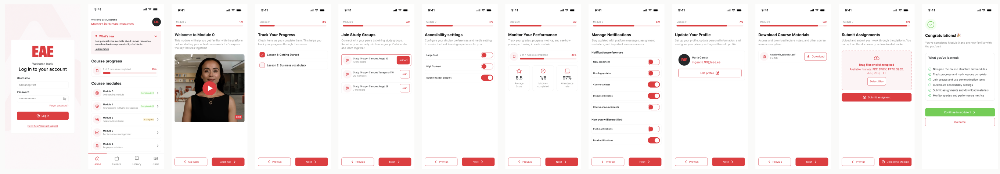

Improving the onboarding experience

Overview
New students were expected to learn course content while simultaneously learning how to use the platform. Research showed that this dual learning created unnecessary cognitive load, causing hesitation, confusion, and increased support requests during the first learning experience.
Research
The project began after the student support team reported a high volume of tickets during the first weeks of the course. Most requests were not related to course content but to navigating the platform, locating resources, understanding module progression, and completing basic actions such as submitting assignments.
STUDENT SUPPORT TICKET #1
“Hi, I'm on Module 1 and I've completed the lesson, but I don't know where I'm supposed to upload my assignment. Could someone point me to the right place? Idk which formats are allowed”
INSIGHT
Users lacked a clear mental model of the course structure and expected interactions.
STUDENT SUPPORT TICKET #2
“I wanted to start Module 2, but it's locked. I don't understand what I still need to complete before I can continue.”
INSIGHT
Users didn't understand progression rules.
| RESEARCH HYPOTHESIS | VALIDATION METHOD | OUTCOME |
|---|---|---|
| Students spend significantly more time completing Module 1 than Module 2 due to onboarding friction. | Compared the average hours spent completing Module 1 versus Module 2 using platform analytics. | Confirmed |
| Unclear explanatory videos at the beginning of the course are the cause of student confusion. | Usability testing and student feedback sessions. | Rejected |
| Students do not initially have a clear mental model of the platform structure or learning flow. | Moderated usability testing with first-time users performing navigation tasks. | Confirmed |
KEY INSIGHT
Users weren't struggling with the interface itself. They were struggling because they had to learn two things at once: the course content and platform functionality.
Problem Definition
Students entering Module 1 were introduced to a new platform while also beginning their coursework. Navigating unfamiliar interactions, understanding the course structure, and learning new content simultaneously created unnecessary cognitive load, reducing confidence and making the first learning experience more challenging than it needed to be.
Goals
Reduce cognitive load and time completion in Module 1.
Reduce support tickets or student requests regarding navigation and interaction.
Increase user confidence and platform familiarity.
Increase learning efficiency across all courses.
Ideation
To guide the ideation process, we framed the challenge around this key question.
HOW MIGHT WE...
Help students feel confident using the platform before they begin learning course content?
We explored several approaches to reduce the friction students experienced when starting the course. The main challenge was finding a way to separate platform learning from course learning without adding unnecessary complexity.
| OPTION | SOLUTION | PROS | CONS | DECISION |
|---|---|---|---|---|
| A | Simplify Module 1 | Reduces initial complexity | Students still learn the platform and course content at the same time | Rejected |
| B | Improve contextual guidance (tooltips, hints, inline instructions) | Makes navigation easier by providing support during tasks | Doesn't separate platform learning from course learning | Rejected |
| C | Create a training module | Separates platform learning from course learning | Requires an additional onboarding step | Selected |
KEY DECISION
We ended up choosing Option C: Create a Training Module because students were trying to learn the platform and the course content at the same time. A training module lets them learn the platform first, making it easier to start the course.
Solution: Module 0
| FEATURE | UI PATTERN | OUTCOME |
|---|---|---|
| Guided Step-by-Step Progression | Next/Previous buttons, step indicator | Users understand lesson flow |
| Progress Tracking | Progress bar, completion badges | Clear sense of advancement |
| Performance Summary Dashboard | KPI cards (score, attendance) | Transparency in evaluation |
| Assignment Submission | Upload card, file picker | Confidence with submissions |
| Instant Feedback | Success messages, state changes | Reduced uncertainty |
| Accessible Interaction Support | Focus states, ARIA labels | Inclusive experience |
Final Prototype

Outcomes and learnings
- Module 1 average completion time decreased from 40 hours to 39 hours, bringing it closer to Module 2 (36 hours).
- 76% of students voluntarily completed the optional module 0 before starting the course.
- Navigation-related student support tickets decreased from 21 to 17 requests within the first week, indicating a slight reduction in navigation issues.
LEARNING
I learned that helping users feel confident at the start can have a measurable impact on their overall experience.